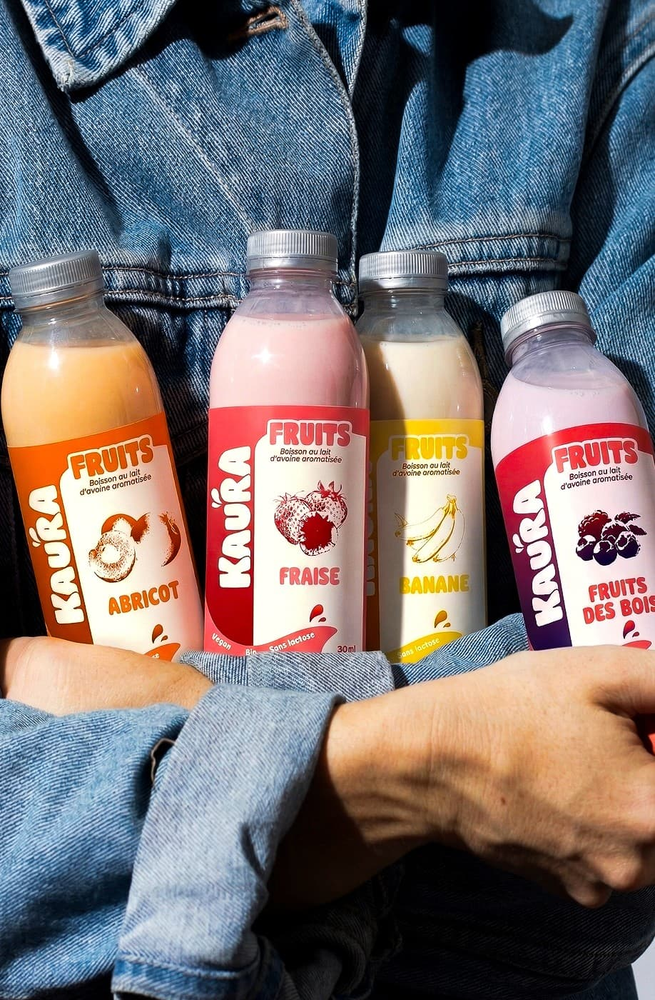
Formats 33/50clLes laits Fruités
Frais, fruité, pétillant — la dose de good vibes pour bien démarrer.
En grande surface, le lait végétal en petit format n'existait pas vraiment. Une brique d'un litre ou rien. Alors on a créé Kaura : des boissons à base d'avoine, en canette et en bouteille, avec des arômes qui changent vraiment.
Pour les intolérants au lactose, les flexitariens, et tous ceux qui veulent boire autrement — sans se ruiner, sans se compliquer la vie. Des ingrédients traçables, des emballages qu'on peut expliquer, et du goût qu'on assume. C'est tout ce qu'on est.
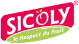
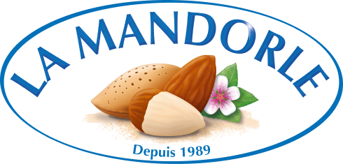
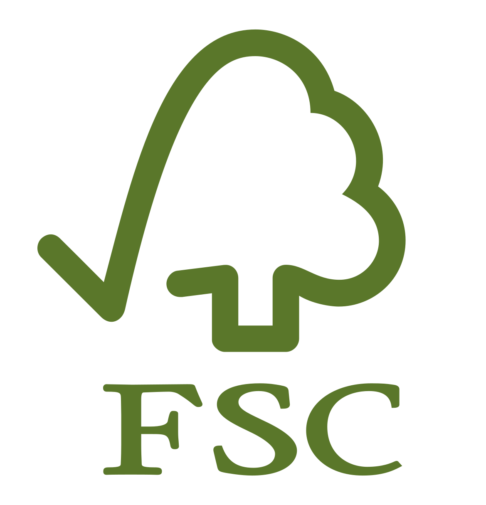
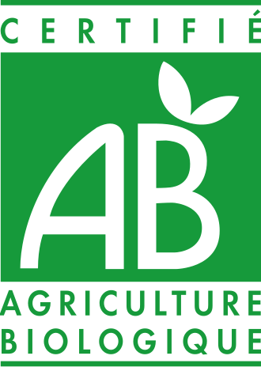
Découvre nos 3 gammes, sauras-tu trouver ta préférée ?
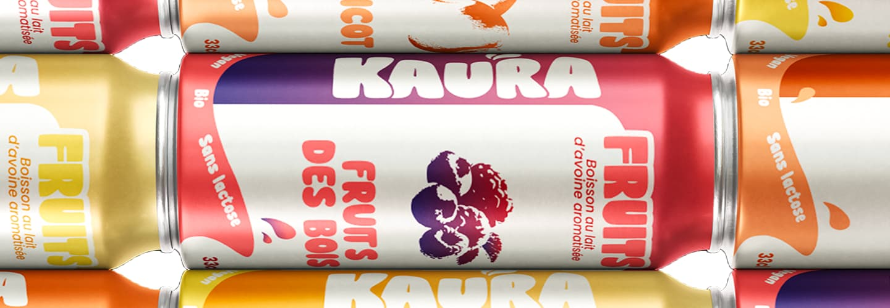

Formats 33/50clFrais, fruité, pétillant — la dose de good vibes pour bien démarrer.
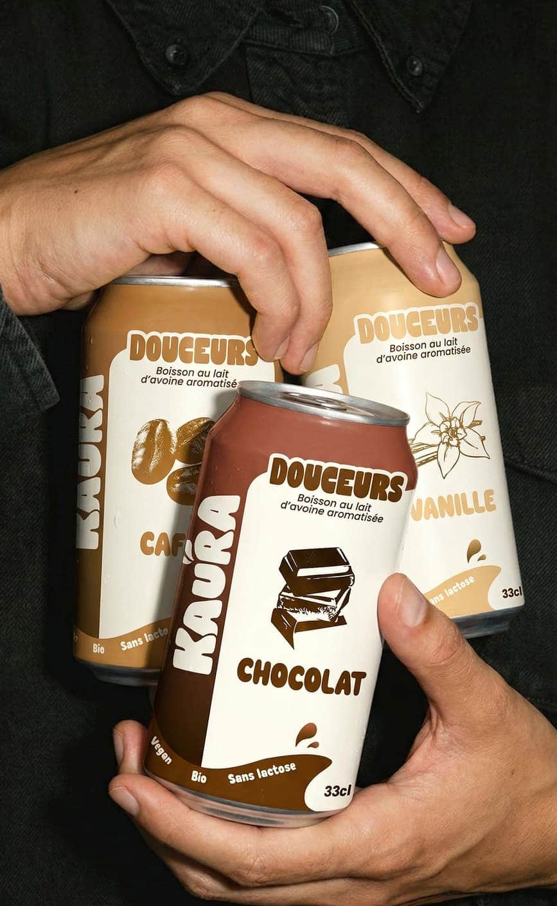
Formats 33/50clDoux, réconfortant, généreux — pour un moment de douceur à savourer.
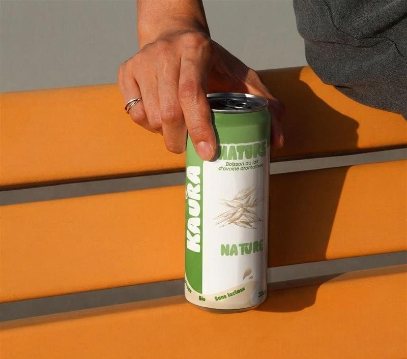
Formats 33/50clPur, simple, authentique — pour ceux qui préfèrent l'essentiel.
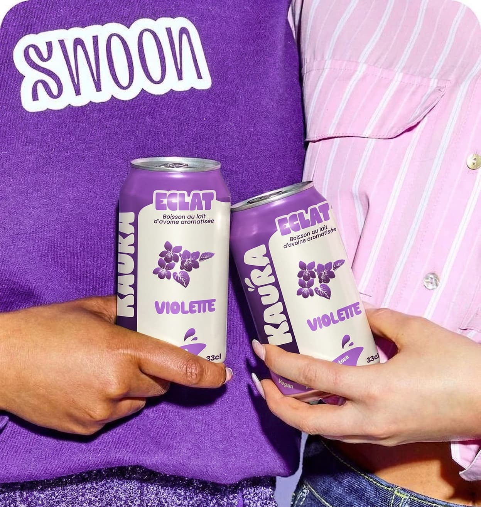
Formats 33/50clLa gamme Éclat, c'est une boisson à l'avoine aux notes florales et légères.
On a pris soin de chaque détail — et on t'explique pourquoi.
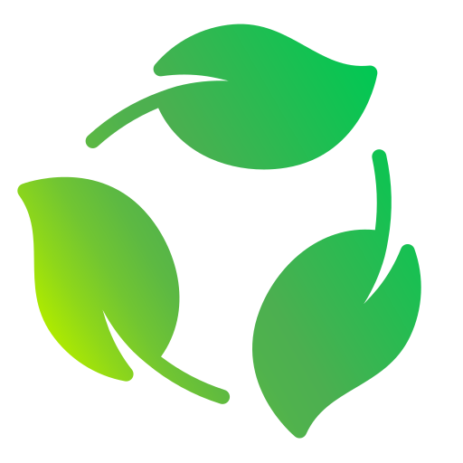
Notre format 50cl Tetra Pak Earth : 89% de matières végétales, bouchon biosourcé, certification FSC sur toute la chaîne papier. L'emballage, on sait d'où il vient.
Produit en Isère par LBDV, fruits Sicoly — 160 producteurs, vergers dans un rayon de 50 km. Circuit court réel, documenté, pas juste affiché sur une étiquette.
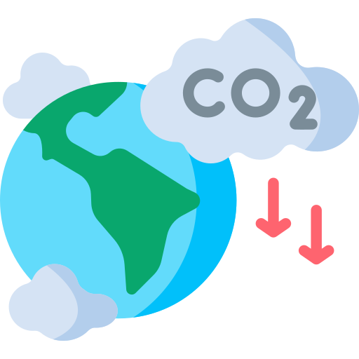
L'avoine génère 3x moins de CO₂ que la production d'un lait de vache équivalent. Pas une promesse — une donnée mesurée sur la filière, vérifiable.
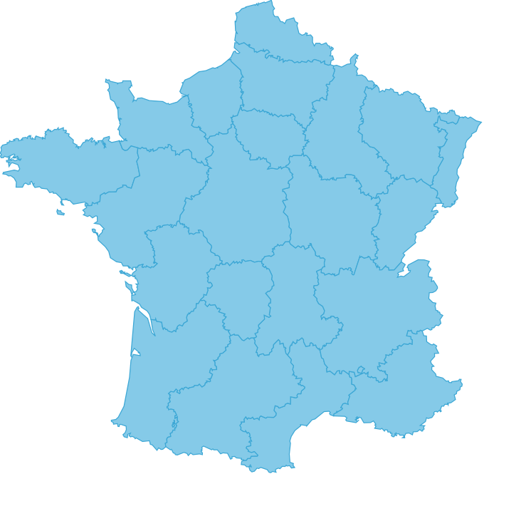
Entre le nom de ta ville — on t'indique tous les points de vente Kaura en France.
Gamme : Les laits fruités — Pêche-Abricot 33cl
"Intolérante au lactose, j'avais arrêté de chercher des alternatives sympas. Le Pêche-Abricot de Kaura c'est la première boisson végétale que je rachète vraiment. C'est fruité sans être écœurant, et la canette passe partout."
.jpg) Thomas, 31 ans, Paris
Thomas, 31 ans, Paris
Gamme : Les douceurs — Cappuccino 50cl
"Je buvais Oatly depuis 2 ans. J'ai craqué sur le Cappuccino Kaura un peu par hasard en rayon et je suis passé dessus depuis. Le format bouteille, c'est pratique le matin, et le goût est vraiment là. Le bilan carbone affiché directement dessus, ça aide aussi à faire confiance."
Gamme : Nature — Nature sans sucre 33cl
"Je suis vegan depuis 3 ans et je cherchais quelque chose de neutre pour mes smoothies. Kaura Nature sans sucre c'est exactement ça, aucun arrière-goût, aucun sucre ajouté. La canette est recyclable et les instructions sont marquées dessus."